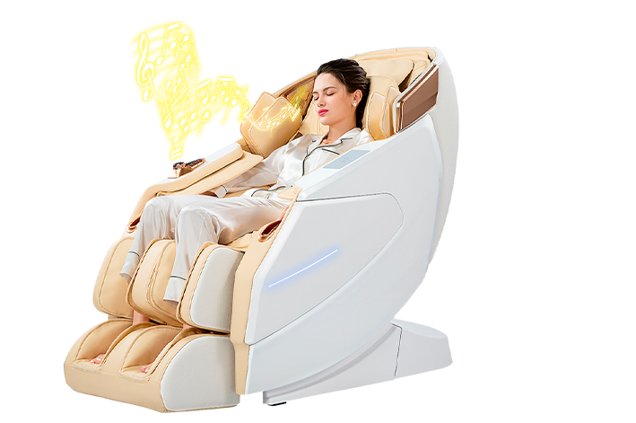
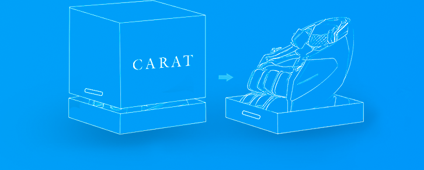

5
уровневая
интенсивность 4D массажа
Меняйте глубину воздействия от мягкого до
жесткого
Роскошь
для
Ценителей
Красоты
Соматосенсорный 4D массажный механизм последнего поколения «ROBO - INTELLECT"
Увеличен охват площади массажа тела на 20%
Теперь ролики имеют рекордный диапазон воздействия:
шириной: минимум 1,5 см и максимум 21 см и глубиной до 12 см
5
уровневая
интенсивность 4D массажа
Меняйте глубину воздействия от мягкого до
жесткого
20
Увеличенный диапазон
массажа спины и шеи
%
1
Регулируемая глубина
воздействия
СМ
новая технология 2-х видов гравитации
СМ
Сверхдлинная гиперболическая направляющая
каретка
135
Массаж основных частей тела
Обширный массаж всех частей тела на 20%
6
Жизненно важных точек
Для разных форм тела и разных возрастов
30
Эластичность суставов и мышц во всем теле, укрепление и подвижность мышечного корсета
позвоночного столба,
коленей, голени и ступней. В результате появляется свобода движений,
облегчается выполнение акробатических
или эквилибристических элементов. Хорошая подвижность
суставов снижает риск травмирования во время любых
других спортивных тренировок
Классическая
растяжка и
разгибание
Растяжка мышц,
снятие стресса
Правильная форма тела
растяжка межпозвоночных дисков
Помощь при выполнении упражнений
Восстановление после усталости и
омоложение суставов
Метод моделирования и
специальная растяжка
поясницы
кресло
усыпано функциями
Автоматических
режимов
режима
памяти
пульта
доступны опции для изменения положения массажа, режима массажа, скорости массажа, ширины, разминания ролика для ног и икроножной мышцы
Оснащен функцией прогревания: области спины и ног спроектированы с графеновым нагревом для ускорения кровообращения.
В дополнение ко всем неоспоримым достоинствам нового массажного кресла можно отнести беспроводную технологию зарядки смартфонов, которая призвана избавить от хлопот с неудобными разъемами.
Массажное кресло оборудовано встроенной в левый подлокотник специальной системой быстрого запуска кресла в виде джойстика consigliere Вы нажимаете кнопку запуска, и сердце вашего кресла начинает размеренно биться, а на пульте управления появляется информационное сообщение, как бы приветствуя своего хозяина. Интуитивное управление с помощью джойстика позволит быстро включить кресло.
Инновационный массажный
механизм, позволяющий
охватывать не только всю
поверхность спины, но и
область
ягодиц.
При помощи группы массажных
подушек, осуществляет
скручивающий массаж с
элементами мануальной
терапии.
24 массажные подушки
проработают ваши руки от локтей
до кончиков пальцев.
оснащен уникальной двухступенчатой
роликовой системой массажа, что в
комплексе с воздушно -
компрессионным
воздействием снимает усталость Ваших ног
за считаные минуты
Уникальная функция растяжка
позвоночника. Данную функцию
можно использовать как вместе с
массажем,
так и отдельно.
Кресло подключается к вашему мобильному устройству через Bluetooth, позволяя слушать музыку во время массажа через встроенные колонки.
Также позволяет заряжать мобильный телефон и другие устройства
55 массажных подушек позволяют максимально эффективно прорабатывать все области вашего
тела.
Инфракрасный прогрев поясничной области поможет в борьбе с радикулитом, а также при болезнях почек.
Комплексный компрессионный и роликовый массаж ступней снимет усталость ваших ног за считанные минуты.
Команды голосом, освободи руки

Фирма National особенно тщательно подходит к дизайну своей продукции,
и линейка массажных
кресел National – это успешная коллаборация с
амбициозным японским дизайнером KEN OKUYAMA.
В новой линейке продукции National используется сверхпрочная,
качественная автомобильная эко кожа, которой обшивают кресла
премиальных автомобилей.
От всемирно известного Ferrari Дизайнера KEN OKUYAMA
Конструкция массажных кресел фирмы National разработана специально для использования кресел в домашних условиях, благодаря компактным габаритам кресла Вы с легкостью сможете внести его в стандартный дверной проем шириной 80см.
  